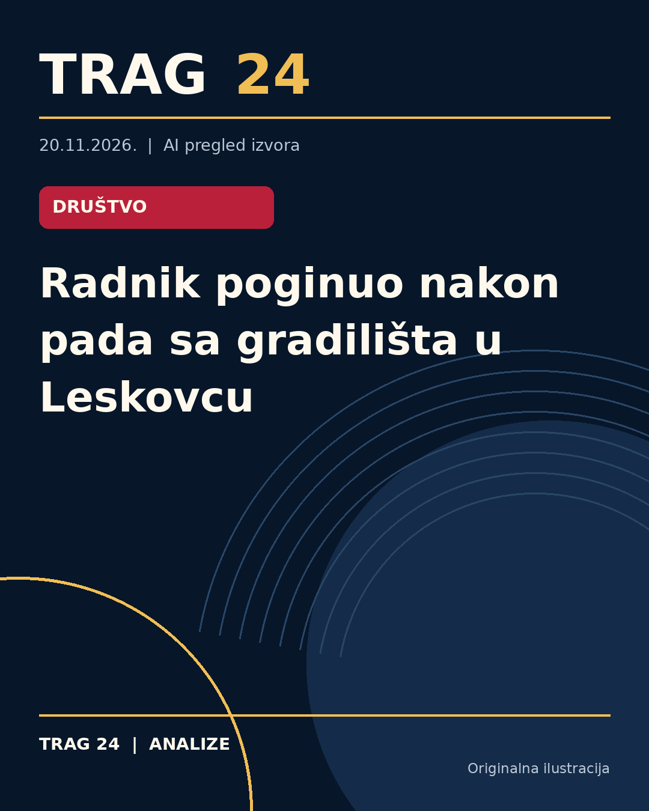

Radnik poginuo nakon pada sa gradilišta u Leskovcu

ŠTA SE DOGODILO
Na gradilištu nekadašnje Tekstilne industrije „Leteks“ u Leskovcu, gde se gradi stambeno-poslovni kompleks, dogodila se tragična nesreća u kojoj je stradao pedesetogodišnji muškarac. Došlo je do pada sa visine, nakon čega je unesrećeni prevezen u Opštu bolnicu Leskovac, gde je potvrđena smrt.
HRONOLOGIJA
Prijava o padu sa visine na gradilištu primljena je u Policijskoj upravi Leskovac danas u 14:05 časova. Hitna medicinska pomoć je odvezla povređenog muškarca u leskovačku bolnicu, gde su lekari mogli samo da konstatuju smrt.
ŠTA NAVODE IZVORI
Policijska uprava Leskovac potvrdila je smrt muškarca na gradilištu, a detalji o tačnim okolnostima pada i dalje nisu poznati. Informacije koje daju mediji su u saglasnosti što se tiče mesta nesreće, starosti žrtve i vremenu prijave incidenta. Informer izvor je naveo i druge slučajeve nesreća na gradilištima u regionu, ali te informacije se ne odnose na događaj u Leskovcu.
ŠTA JE POTVRĐENO
Potvrđeno je da je na gradilištu nekadašnje Tekstilne industrije „Leteks“ u Leskovcu stradao muškarac star oko pedeset godina koji je pao sa visine. Prijava o nesreći stigla je u 14:05, a smrt je potvrđena u leskovačkoj bolnici.
ŠTA NIJE POTVRĐENO
Nisu poznate okolnosti koje su dovele do pada radnika sa visine, uključujući da li je bilo prisutno neko drugo lice, tehnička neispravnost ili propust u sigurnosnim merama. Ni identitet nastradalog nije precizno objavljen u dostupnim izvorima.
ŠTA OSTАJE OTVORENO: Ostaje nejasno šta je dovelo do pada, kao i da li će nadležni organi sprovesti dalju istragu o uzrocima nesreće. Takođe, status bezbednosnih uslova na gradilištu i eventualne prevencije za buduće aktivnosti nisu poznati.
Izvori
- https://informer.rs/hronika/vesti/1171784/poginuo-radnik-na-gradilistu-leskovac
- https://www.juznevesti.com/hronika/stradao-radnik-nakon-pada-sa-visine-na-gradilistu-u-leskovcu/
- https://www.blic.rs/vesti/hronika/poginuo-radnik-na-gradilistu-u-leskovcu/cz1c8br
Ova analiza je pripremljena uz pomoć veštačke inteligencije na osnovu javno dostupnih izvora. Navodi izvora nisu nužno nezavisno potvrđeni.